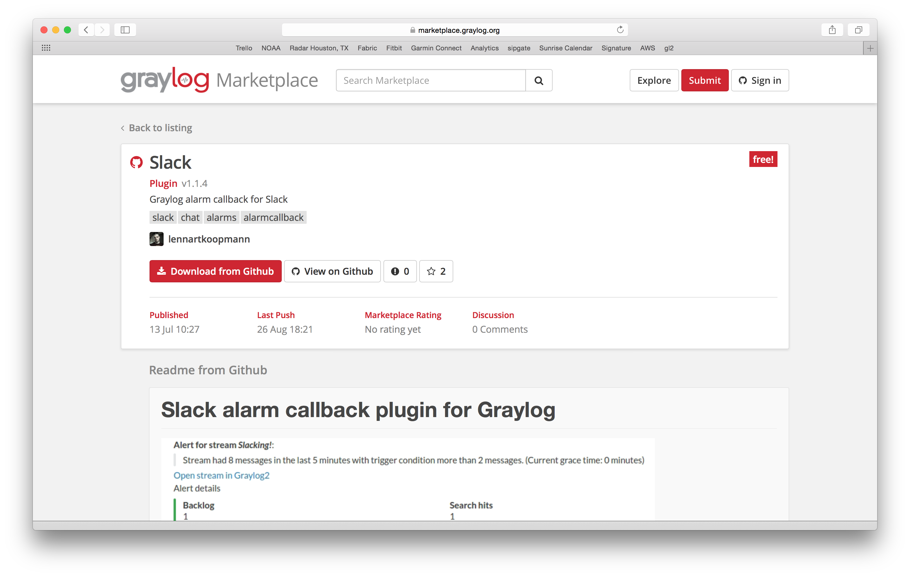

Graylog Marketplace¶
The Graylog Marketplace is the central directory of add-ons for Graylog. It contains plugins, content packs, GELF libraries and more content built by Graylog developers and community members.
GitHub integration¶
The Marketplace is deeply integrated with GitHub. You sign-in with your GitHub account if you want to submit content and only have to select an existing repository to list on the Marketplace.
From there on you manage your releases and code changes in GitHub. The Marketplace will automatically update your content.
There is no need to sign-in if you only want to browse or download content.
General best practices¶
README content¶
We kindly ask you to provide an as descriptive as possible README file with your
submission. This
file will be displayed on the Marketplace detail page and should provide the following
information:
- What is it.
- Why would you want to use it? (Use cases)
- Do you have to register somewhere to get for example an API token?
- How to install and configure it.
- How to use it in a Graylog context.
Take a look at the Splunk plug-in as an example.
The README supports Markdown
for formatting. You cannot submit content that does not contain a README file.
License¶
You cannot submit content that does not contain a LICENSE or COPYING file.
We recommend to consult ChooseALicense.com if you are
unsure which license to use.
4 Types of Add-Ons¶
Plug-Ins: Code that extends Graylog to support a specific use case that it doesn’t support out of the box.
Content Pack: A file that can be uploaded into your Graylog system that sets up streams, inputs, extractors, dashboards, etc. to support a given log source or use case.
GELF Library: A library for a programming language or logging framework that supports sending log messages in GELF format for easy integration and pre-structured messages.
Other Solutions: Any other content or guide that helps you integrate Graylog with an external system or device. For example, how to configure a specific device to support a format Graylog understands out of the box.
Contributing plug-ins¶
You created a Graylog plugin and want to list it in the Marketplace? This is great. Here are the simple steps to follow:
- Create a GitHub repository for your plugin
- Include a README and a LICENSE file in the repository.
- Push all your code to the repository.
- Create a GitHub release
and give it the name of the plugin version. For example
0.1. The Marketplace will always show and link the latest version. You can upload as many release artifacts as you want here. For example the.jarfile together withDEBandRPMfiles. The Marketplace will link to the detail page of a release for downloads. - Submit the repository to the Marketplace
Contributing content packs¶
Graylog content packs can be shared on the Marketplace by following these steps:
- Export a Graylog content pack from the Graylog Web Interface and save the
generated JSON in a file called
content_pack.json. - Create a GitHub repository for your content pack
- Include a README and a LICENSE file in the repository.
- Include the
content_pack.jsonfile in the root of your GitHub repository. - Submit the repository to the Marketplace
Contributing GELF libraries¶
A GELF library can be added like this:
Contributing other content¶
You want to contribute content that does not really fit into the other categories but describes how to integrate a certain system or make it send messages to Graylog?
This is how you can do it: